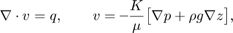
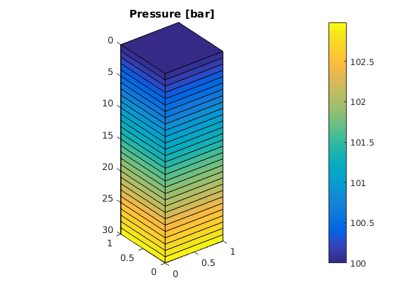

Contents
Gravity Column
In this example, we introduce a simple pressure solver and use it to solve the single-phase pressure equation

within the domain [0,1]x[0,1]x[0,30] using a Cartesian grid with homogeneous isotropic permeability of 100 mD. The fluid has density 1000 kg/m^3 and viscosity 1 cP and the pressure is 100 bar at the top of the structure.
The purpose of the example is to show the basic steps for setting up, solving, and visualizing a flow problem. More details on the grid structure, the structure used to hold the solutions, and so on, are given in the basic flow-solver tutorial.
addpath('src'); mrstModule add incomp
No module mapping found for * incomp
Define the model
To set up a model, we need: a grid, rock properties (permeability), a fluid object with density and viscosity, and boundary conditions.
gravity reset on G = cartGrid([1, 1, 30], [1, 1, 30]); G = computeGeometry(G); rock.perm = repmat(0.1*darcy(), [G.cells.num, 1]); fluid = initSingleFluid('mu' , 1*centi*poise, ... 'rho', 1014*kilogram/meter^3); bc = pside([], G, 'TOP', 100.*barsa());
Assemble and solve the linear system
To solve the flow problem, we use the standard two-point flux-approximation method (TPFA), which for a Cartesian grid is the same as a classical seven-point finite-difference scheme for Poisson's equation. This is done in two steps: first we compute the transmissibilities and then we assemble and solve the corresponding discrete system.
T = simpleComputeTrans(G, rock);
sol = simpleIncompTPFA(initResSol(G, 0.0), G, T, fluid, 'bc', bc);
Plot the face pressures
newplot; plotFaces(G, 1:G.faces.num, convertTo(sol.facePressure, barsa())); set(gca, 'ZDir', 'reverse'), title('Pressure [bar]') view(3), colorbar set(gca,'DataAspect',[1 1 10]); %{ Copyright 2009-2016 SINTEF ICT, Applied Mathematics. This file is part of The MATLAB Reservoir Simulation Toolbox (MRST). MRST is free software: you can redistribute it and/or modify it under the terms of the GNU General Public License as published by the Free Software Foundation, either version 3 of the License, or (at your option) any later version. MRST is distributed in the hope that it will be useful, but WITHOUT ANY WARRANTY; without even the implied warranty of MERCHANTABILITY or FITNESS FOR A PARTICULAR PURPOSE. See the GNU General Public License for more details. You should have received a copy of the GNU General Public License along with MRST. If not, see <http://www.gnu.org/licenses/>. %}